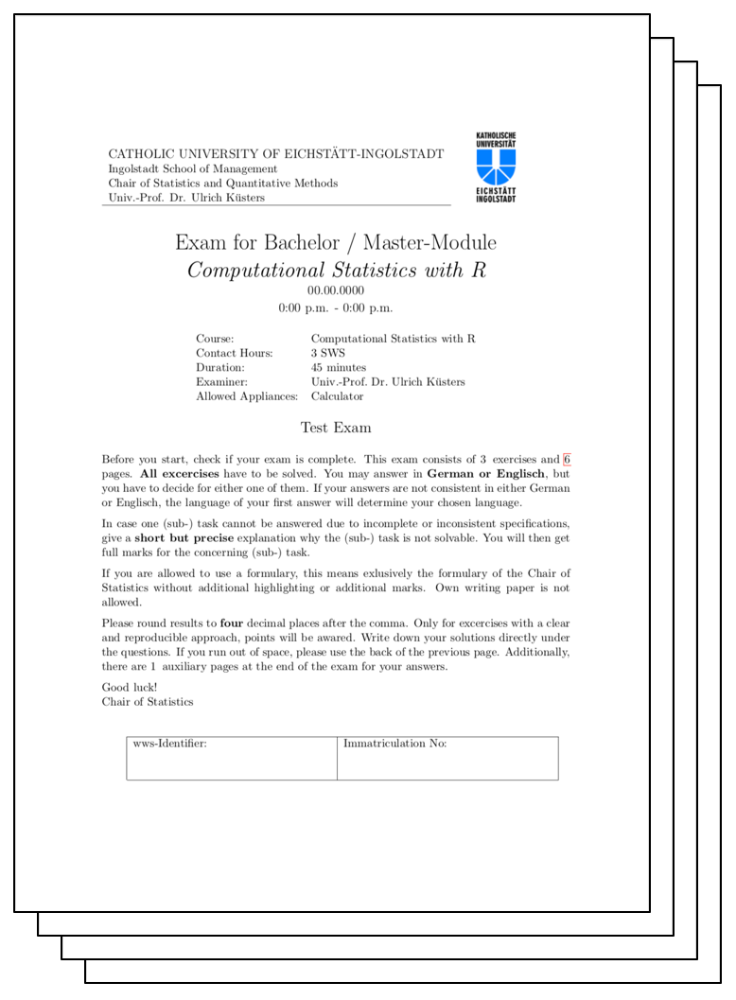

B Test Exam

| Description | Download Link |
|---|---|
| Test Exam SS 2019 | DOWNLOAD |
B.1 Additional Exercises
B.1.1 Exercise I
The following function makemat was found in the file function.final.final2.R as part of an old undocumented project. Therefore its purpose is unknown. Being a young and ambitious R developer you were asked to answer the following questions.
#R> [1] 0.05 0.25 0.31 0.24 0.13 0.18 0.35 0.29 0.55kat <- c(1, 2, 3)
val <- c(0.2, 0.4, 0.6)
mat <- matrix(num, ncol = 3, nrow = 3)
for ( i in 1:prod(dim(mat)) ){
for ( j in val){
state <- (mat[i] < j)
if (state){
mat[i] <- kat[j == val]
}
}
}
mat[(mat % 2) == 1] <- 1
matWhile executing and trying to load the function above the following message appears. Explain why the message is returned and correct the error in the provided source code.
Error: unexpected input in "mat[(mat % 2) == 1] <- 1"Make yourself familiar with the provided code and briefly describe in a generic way what the code does (line-by-line, one full iteration of the outer loop). Ensure that your description is short but precise and allows the reader to gain a deep understanding of the data manipulation process.
Write down the content of the variable
matafter fixing the error and executing the code above.
B.2 Exercise II
The following three code snippets were found in the file misc.support.final.final2.R as part of an old undocumented project. Therefore their purpose is unknown. Being a young and ambitious R developer you were asked to explain the mysterious content of the following three snippets.
- Briefly describe what the code snippet above does (line-by-line).
- Please give your opinion on the provided code and comment on time of execution.
### CODE SNIPPET 2
res <- list()
for (i in 1:10){
res[[i]] <- sample(seq(from=0,to=1,by=0.2))
}
sum(sapply(res,FUN = sum))
length(res)
typeof(res[[1]][1])- Please write down what the last three lines of code snippet 2 return when executing the code above.
### CODE SNIPPET 3
a <- array(sort(rep(1:3,4)),dim=c(2,2,3))
for ( i in 1:dim(a)[1] ){
for ( j in 1:dim(a)[2] ){
for ( k in 1:dim(a)[3] ){
a[i,j,k] <- ifelse(a[i,j,k] %% 2, a[i,j,k], NA)
}
}
}
a- Please write down the content of the variable
awhen snippet 3 is executed.
B.2.1 Exercise III
The following function genlist was found in the file list-maker.final.final2.R as part of an old undocumented project. Therefore its purpose is not known. Being a young and ambitious R developer you were asked to answer the following questions.
genlist <- function(x=sample(x=1:5, size=5)){
n <- 0
for (i in (1:length(x))){
if (x[i] % 2 == 1){
n <- n + 1
}
}
res <- list(n=n, x=x, y=rev(x), z=sort(x))
return(res)
}While executing and trying to load the function above the following message appears. Explain why the message is returned and correct the error in the provided source code.
Error: unexpected input in:" for (i in (1:length(x))){if (x[i] % 2 == 1){"Briefly describe what the function
genlistdoes (line-by-line) and returns. Ensure that your description is precise and allows the reader to gain a deep understanding of how the values in the returned list are generated.Provide the results to the following function call based on your corrected code.
- Please come up with a single line of code that returns the type of each list element. Name the respective datatypes and answer the question if these can be different from values returned by
class.
Arnold, Jeffrey B. 2020. R for Data Science: Exercise Solutions. Chapter 3.7: Statistical Transformations. https://jrnold.github.io/r4ds-exercise-solutions/data-visualisation.html#statistical-transformations.
Auguie, Baptiste. 2017. GridExtra: Miscellaneous Functions for "Grid" Graphics. https://CRAN.R-project.org/package=gridExtra.
Chang, Winston, Joe Cheng, JJ Allaire, Carson Sievert, Barret Schloerke, Yihui Xie, Jeff Allen, Jonathan McPherson, Alan Dipert, and Barbara Borges. 2022. Shiny: Web Application Framework for R. https://CRAN.R-project.org/package=shiny.
Meschiari, Stefano. 2022. Latex2exp: Use Latex Expressions in Plots. https://CRAN.R-project.org/package=latex2exp.
R Core Team. 2021. R: A Language and Environment for Statistical Computing. Vienna, Austria: R Foundation for Statistical Computing. https://www.R-project.org/.
RStudio, Inc. 2015. Interactive Web Apps with Shiny Cheat Sheet. https://shiny.rstudio.com/images/shiny-cheatsheet.pdf.
. 2020. Gallery. https://shiny.rstudio.com/gallery/.
RStudio, PBC. 2021. Data Visualization with Ggplot2::CHEAT Sheet. https://raw.githubusercontent.com/rstudio/cheatsheets/main/data-visualization.pdf.
Sievert, Carson. 2019. Interactive Web-Based Data Visualization with R, Plotly, and Shiny. Chapman; Hall/CRC. https://plotly-r.com.
. 2020. Interactive Web-Based Data Visualization with R, Plotly, and Shiny. Chapman; Hall/CRC. https://plotly-r.com.
Wei, Y. 2021. Colors in R. Department of Biostatistics, Columbia University. http://www.stat.columbia.edu/~tzheng/files/Rcolor.pdf.
Wickham, Hadley. 2016. Ggplot2: Elegant Graphics for Data Analysis. Springer-Verlag New York. https://ggplot2.tidyverse.org.
Wickham, Hadley, and Maximilian Girlich. 2022. Tidyr: Tidy Messy Data. https://CRAN.R-project.org/package=tidyr.
Wilkinson, L. 2005. The Grammar of Graphics. 2nd ed. New York: Springer.
Wilkinson, Leland. 2010. The Grammar of Graphics. Wiley Interdisciplinary Reviews. Computational Statistics 2 (6): 67377.